Sale of New Equipment — Design & Fabricate
We design, fabricate and sell new semiconductor processing equipment — from wet process and CMP to exhaust systems and active vibration isolation. All equipment is purpose-built to specification.
Wet Process Equipment
Precision equipment for wafer cleaning, chemical dispensing, and drying — designed and fabricated by SemiCo.
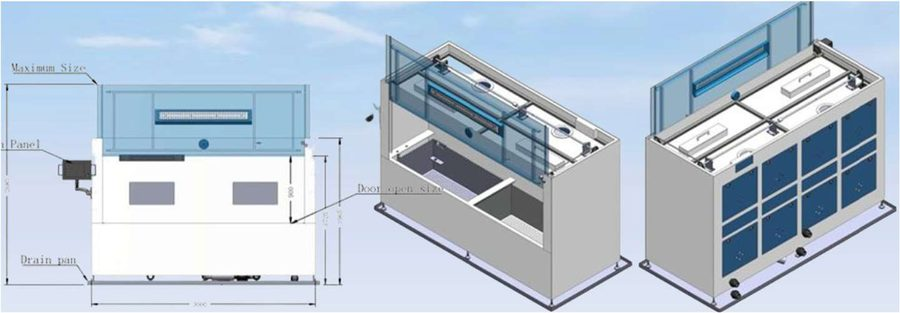
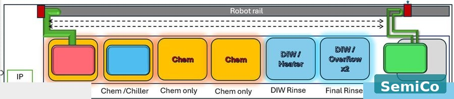
Designed for RCA cleans, HF dips, and IPA drying with full safety compliance for semiconductor fabs.
Key Features
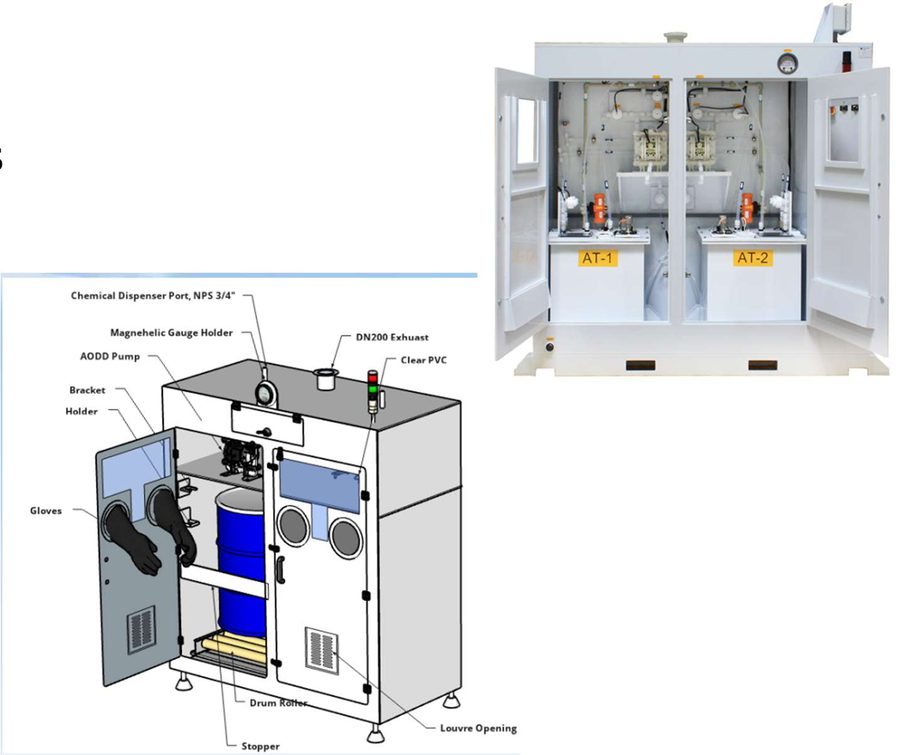
Dual-line dispensing for acids and solvents — compatible with HF, HCl, H₂O₂ and IPA.
Key Features
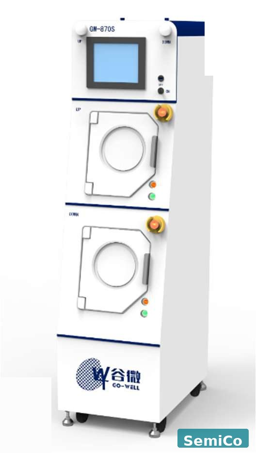
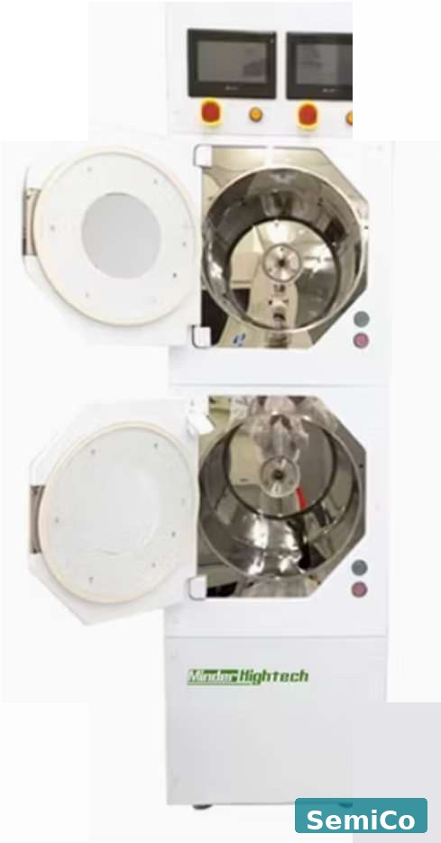
Single or dual chamber configurations for silicon wafer cleaning and drying.
Specifications
Panel Processing
Large-format panel CMP systems custom-built for flat panel display substrates and advanced packaging applications.
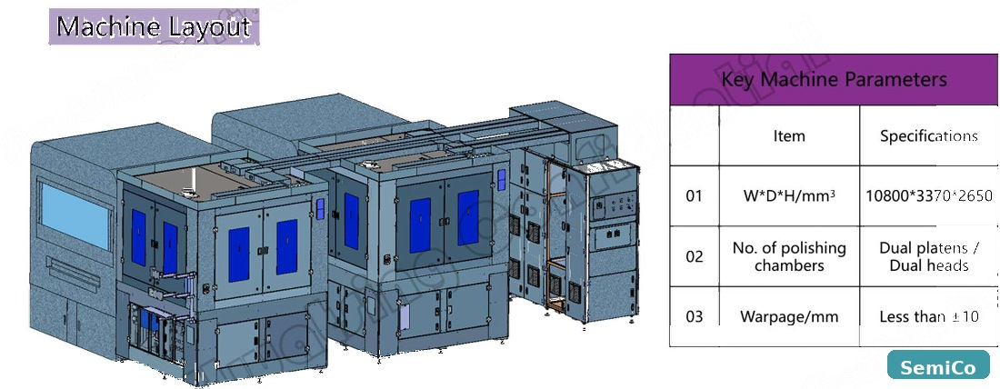
Dual-platen, dual-head polishing system for large-format panel substrates.
Machine Specifications
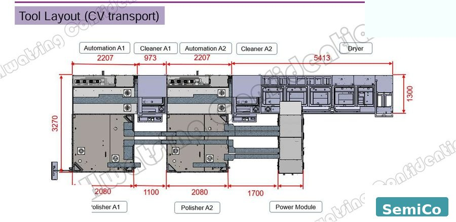
Full tool layout with automated panel handling between polishing and cleaning modules.
Tool Layout
Advanced Materials
Specialist equipment for advanced packaging and silicon carbide wafer manufacturing.
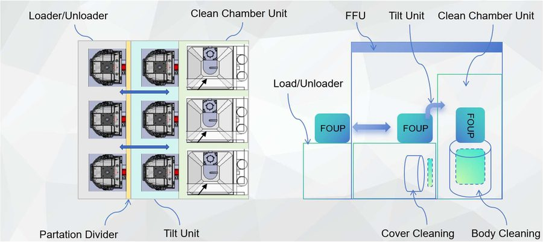
Front Opening Unified Pod cleaning for large-format carrier maintenance in advanced packaging fabs.
Process Modules
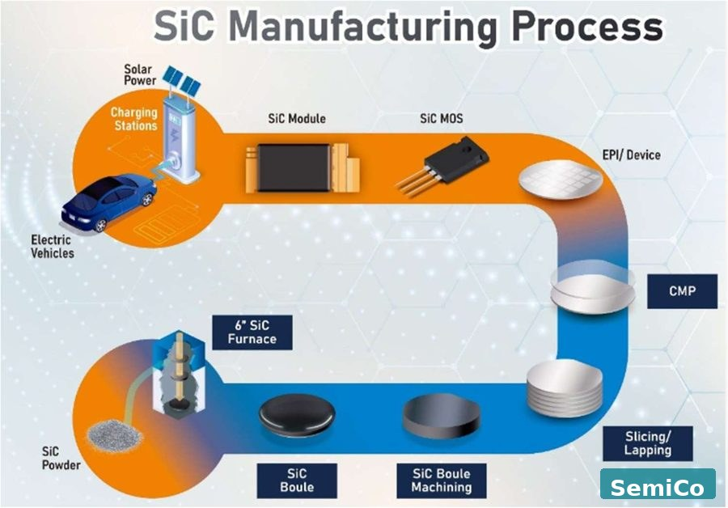
Specialised equipment for the full silicon carbide wafer manufacturing flow — from boule to device-ready substrate.
Process Coverage
Vibration Control
AI-integrated active vibration control — eliminating the need for expensive passive retrofits.
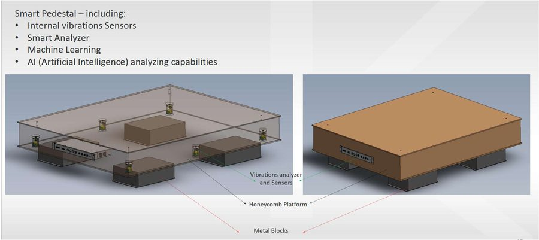
The ArisMD features internal vibration sensors, a smart analyzer, machine learning, and AI capabilities — built on a honeycomb platform with precision metal block load distribution.
Design & Fabricate
Engineered-to-order exhaust ducting, scrubbers, and ultra-pure water systems — 3D-designed and fabricated in-house.
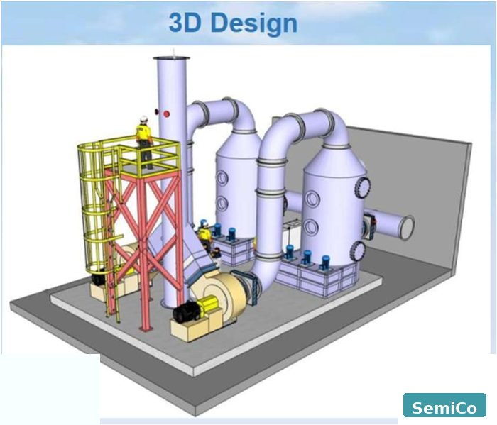
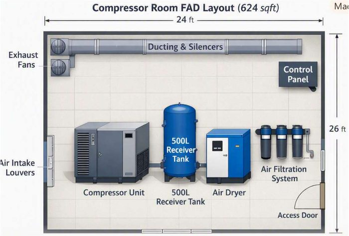
Custom exhaust ducting and ventilation systems — 3D modelled, fabricated, and commissioned for semiconductor fabs.
What We Deliver
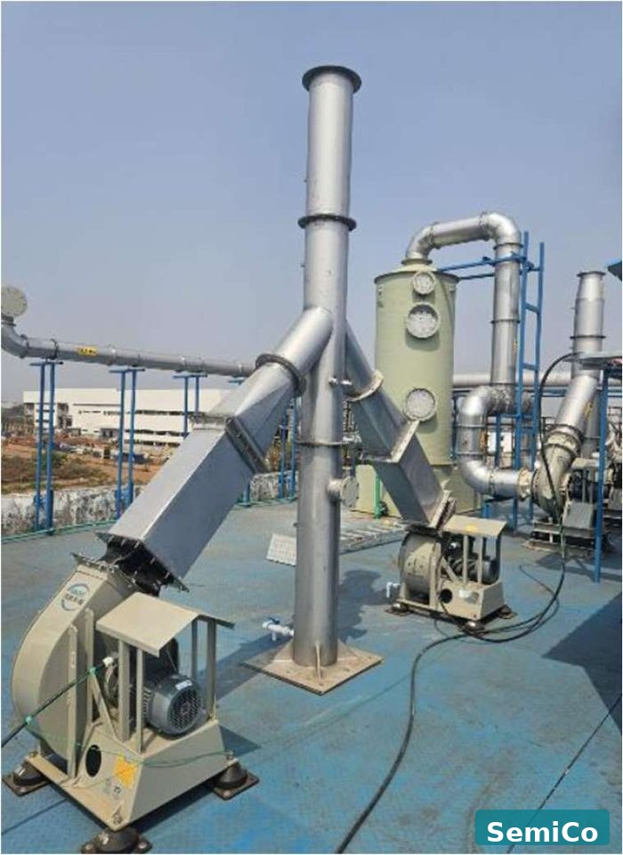
Dedicated exhaust for flammable gas and solvent vapour — compliant with fire and explosion safety codes.
Key Features
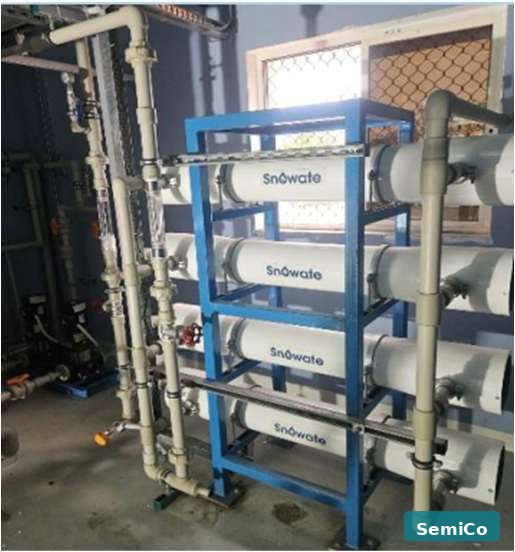
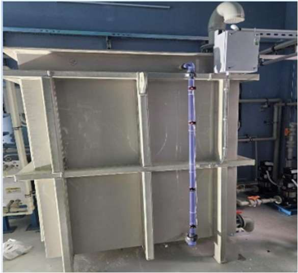
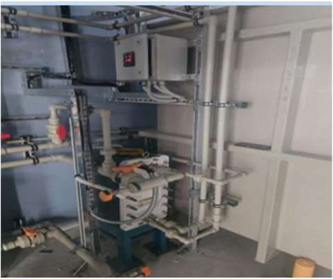
Reverse Osmosis and Electrodeionisation for ultra-pure water (DIW/PCW) production.
Key Features
Enquire Now
All our equipment is custom designed and fabricated to your process specifications. Contact us to discuss your requirements.
Contact Us →